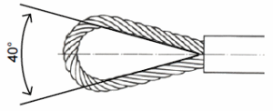

2.1 Vor dem Einsatz ist das geeignete Anschlag-Faserseil entsprechend der vorgesehenen Anschlagart und der erforderlichen Tragfähigkeit auszuwählen; Chemiefaserseile aus Polyethylen und Naturfaserseile aus Baumwolle sind nicht zulässig.
Siehe Kennzeichnung auf dem Kennzeichnungsträger.
2.2 Ausgewählte Anschlag-Faserseile müssen ohne augenfällige Mängel sein.
Mängel, die zur Ablegereife führen, siehe Abschnitt 5.
2.3 Faserseile unter 16 mm Durchmesser dürfen nicht als Anschlagseile verwendet werden.
2.4 Anschlag-Faserseile dürfen nicht über die Tragfähigkeit hinaus belastet werden.
Angaben über die Tragfähigkeit bei verschiedenen Anschlagarten siehe Tabellen des Anhangs.
2.5 Als Anschlag-Faserseile, die über längere Transportwege um die Ladeeinheit geschlungen bleiben, dürfen nur neue oder vor der Verwendung geprüfte Anschlagseile verwendet werden. Die Faserseile dürfen hierbei weder durch die Art des Gutes noch durch die Lagerung während des Transportes beschädigt werden. Sind diese Voraussetzungen erfüllt, dürfen die Anschlag-Faserseile bis zu 40 % der Tragfähigkeit höher belastet werden.
2.6 Anschlag-Faserseile dürfen nicht geknotet werden.
2.7 Anschlag-Faserseile dürfen nicht über scharfe Kanten gespannt und nicht über scharfe Kanten gezogen werden.
Eine scharfe Kante liegt vor, wenn der Radius der Kante kleiner als der Seildurchmesser ist.
2.8 Bei Lasten mit scharfen Kanten dürfen Anschlag-Faserseile nur ein gesetzt werden, wenn die gefährdeten Stellen des Anschlag-Faserseiles geschützt sind.
Dies wird z. B. durch Kantenschoner erreicht.
2.9 Spleiße dürfen nicht an Kanten der Last, in Kranhaken oder in die Bucht der Schnürung gelegt werden.
2.10 Anschlag-Faserseile dürfen nicht durch Umschlingen des Lasthakens gekürzt werden.
2.11 Anschlag-Faserseile dürfen durch Verdrehen nicht verspannt werden.
2.12 Auf Anschlag-Faserseile dürfen Lasten nicht abgesetzt werden, wenn das Seil dadurch beschädigt werden kann.
2.13 Anschlag-Faserseile sind so zu verwenden, dass die Last gegen Herabfallen gesichert ist. Hierbei ist insbesondere zu beachten, dass im Hängegang nicht angeschlagen werden darf. Ausgenommen ist der Anschlag
2.14 Beschlagteile müssen im zusammengebauten Zustand frei beweglich sein. Aufhängeglieder müssen auf dem Kranhaken frei beweglich sein.
2.15 Seile, die mehrmals um die Last gelegt werden, dürfen sich nicht kreuzen. Die Windungen müssen nebeneinander liegen.
2.16 Anschlag-Faserseile müssen so angeschlagen werden, dass der Öffnungswinkel der Endschlaufen an den Verbindungsstellen 40° nicht überschreitet (siehe Skizze).

Bei zu kurzen Schlaufen kann z. B. mit einem Vorläufer, der an einem Ende eine entsprechend vergrößerte Seilschlaufe und am anderen Ende einen kleineren Lasthaken enthält, der zulässige Öffnungswinkel eingehalten werden.